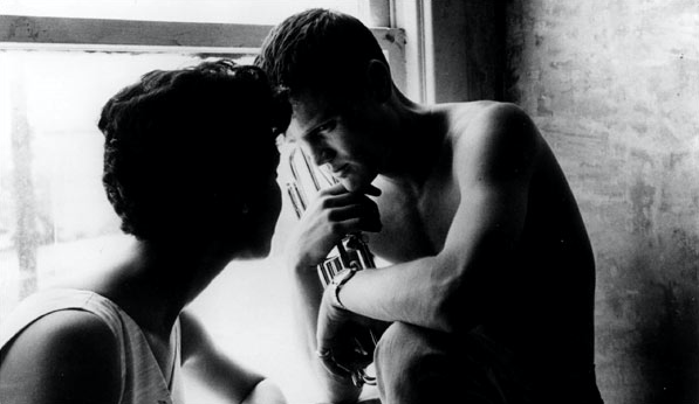

My funny valentine
My funny valentine...
Sweet, comic valentine...
You make me smile with my heart
Your looks are laughable, unphotographable
Yet you're my favorite work of art
Is your figure less than Greek?
Is your mouth a little weak?
When you open it to speak,
Are you smart?
But don't change a hair for me
Not if you care for me
Stay little valentine
Stay...
Each day is valentine's day.
composed by Hart Lorenz with lyrics by Rodgers Richard

I Fall In Love Too Easily
I fall in love too easily
I fall in love too fast
I fall in love too terribly hard
For love to ever last
My heart should be well schooled
'Cause I've been fooled in the past
But still I fall in love so easily
I fall in love too fast
My heart should be well schooled
'Cause I've been fooled in the past
But still I fall in love too easily
I fall in love too fast...
composed by Jule Styne with lyrics by Sammy Cahn.
Not for me
They're writing songs of love
But not for me
A lucky star's above
But not for me
With love to lead the way, I've found more clouds of grey
Than any Russian play could guarantee
I was a fool to fall and get that way
Heigh-ho! Alas! And also, lack-a-day
Although I can't dismiss the memory of her kiss
I guess she's not for me
I was a fool to fall and get that way
Heigh-ho! Alas! And also, lack-a-day
Although I can't dismiss the memory of her kiss
I guess she's not for me
Lyrics George Gershwin / Composed by Ira Gershwin
You don't know what love is
You don't know what love is
Until you've learned the meaning of the blues
Until you've loved a love you had to loose
You don't know what love is
You don't know how lips hurt
Until you've kissed and had to pay the cost
Until you've flipped you're heart and you have lost
You don't know what love is
Do you know how a lost heart fears
The thought of reminiscing
And how lips have taste of tears
Loose the taste for kissing
You don't know how hearts burn
For love that cannot live, yet never dies
Until you've faced each dawn with sleepless eyes
You don't know what love is
You don't know how hearts burn
For love that cannot live, yet never dies
Until you've faced each dawn with sleepless eyes
How could you know what love is, what love is
What love is
Lyrics by Don Raye / Composed by Gene De Paul
《I'm A Fool To Want You》
I'm A Fool To Want You
I'm A Fool To Want You
To Want A Love That Can't Be True
A Love That's There For Others Too
I'm A Fool To Hold You
Such A Fool To Hold You
To Seek A Kiss Not Mine Alone
To Share A Kiss The Devil Has Known
Time And Time Again I Said I'd Leave You
Time And Time Again I Went Away
Then There'd Come The Time When I Would Need You
And Once Again These Words I'd Have To Say
I'm A Fool To Want You
Pity Me I Need You
I Know Its Wrong
It Must Be Wrong
But Right Or Wrong
I Can't Get Along Without You
Time And Time Again I Said I'd Leave You
Time And Time Again I Went Away
Then There'd Come The Time When I Would Need You
And Once Again These Words I'd Have To Say
I'm A Fool To Want You
Pity Me I Need You
I Know Its Wrong
It Must Be Wrong
But Right Or Wrong
I Can't Get Along Without You
Frank Sinatra / Jack Wolf / Joel S. Herron
《Almost blue》
Almost blue
Almost doing things we used to do
There's a gril here and she's almost you
Almost
all the things that your eyes once promised
I see in her too
Now your eyes are red from crying
Almost blue
Flirting with this disaster became me
It named me as the fool who only aimed to be
Almost blue
It's almost touching it will almost do
There's a part of me that's always true...always
Not all good things come to an end now it is only a chosen few
I've seen such an unhappy couple
Almost me
Almost you
Almost blue
by Elvis Costello